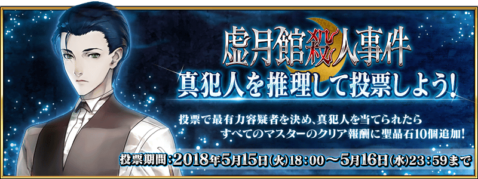

為了記念Fate/Grand Order×現實逃脫遊戲「謎特異點Ⅰ 逃離貝克街」的舉辦，舉辦「Fate/Grand Order 春之神秘祭2018」！
◆舉辦期間◆
2018年4月29日(日)「Fate/Grand Order 迦勒底放送局SP Fate/Apocrypha特別活動舉辦記念放送」放送結束後～5月25日(五) 11:59
Fate/Grand Order×現實逃脫遊戲「謎特異點Ⅰ 逃離貝克街」為目標在60分限制時間內逃脫，以6人1組的團隊行動，挑戰迷題的體驗型遊戲。
故事為原創劇情，參加者的各位自己做為Master，與瑪琇和Servant一起解開在19世紀末的貝克街發生的事件之謎。
會場預定以東京・原宿的公演為開端，在大阪、名古屋、札幌、福岡、横濱的全國6大都市從2018年5月至8月下旬約3個月半舉辦。
關於Fate/Grand Order×現實逃脫遊戲「謎特異點Ⅰ 逃離貝克街」的詳情請至下述URL確認。
http://realdgame.jp/fgo2018/
為了記念自2018年5月11日(五)於全國6大都市依序舉辦的Fate/Grand Order×現實逃脫遊戲「謎特異點Ⅰ 逃離貝克街」的舉辦，舉辦Fate/Grand Order×現實逃脫遊戲「謎特異點Ⅰ 逃離貝克街」解謎宣傳活動！
◆宣傳活動概要◆
舉辦比Fate/Grand Order×現實逃脫遊戲「謎特異點Ⅰ 逃離貝克街」的舉辦更早體驗現實逃脫遊戲解謎樂趣的解謎宣傳活動。
下述期間中，在特設網站會出5道「謎題」。
「謎題」是為了本宣傳活動而製作的特別問題，並非現實逃脫遊戲會體驗到的內容。
初次接觸現實逃脫遊戲的玩家，或是好奇可體驗到怎樣謎題的玩家，無論如何請挑戰「謎題」，體驗解謎吧。
關於詳情請至下述URL，Fate/Grand Order×現實逃脫遊戲「謎特異點Ⅰ 逃離貝克街」官方網站確認。
http://realdgame.jp/fgo2018/
◆宣傳活動舉辦期間◆
2018年4月29日(日)「Fate/Grand Order 迦勒底放送局SP Fate/Apocrypha特別活動舉辦記念放送」放送結束後～5月10日(四) 22:59
|
◆特別禮物◆ ◆贈送對象◆ ◆領取期間◆ |
 |
※2018年5月11日(五) 17:00～5月13日(日) AM2:59的期間中，在初次登入的時間點，一起贈送至禮物箱。
※請注意根據正解者數，贈送的聖晶石數量會有所變動。
※期間內未登入的話無法領取。
※禮物只能領取1次。
| 正解者數 | 贈送內容 |
|---|---|
| 10,000人正解 | 聖晶石 合計1個 |
| 20,000人正解 | 聖晶石 合計2個(追加1個) |
| 30,000人正解 | 聖晶石 合計4個(追加2個) |
| 40,000人正解 | 聖晶石 合計7個(追加3個) |
| 51,100人正解 | 聖晶石 合計10個(追加3個) |

【5月10日(四) 19:45追記】
為了記念Fate/Grand Order×現實逃脫遊戲「謎特異點Ⅰ 逃離貝克街」的舉辦，舉辦「Fate/Grand Order 春之神秘祭2018宣傳活動」。
「謎特異點Ⅰ 逃離貝克街 舉辦記念關卡」和活動相關Servant的友情點數獲得量2倍等詳情請至此處確認。
◆宣傳活動舉辦期間◆
2018年5月11日(五) 17:00～5月25日(五) 11:59

【5月10日(四) 19:45追記】
配合Fate/Grand Order×現實逃脫遊戲「謎特異點Ⅰ 逃離貝克街」的舉辦，在遊戲內舉辦期間限定活動「虛月館殺人事件」。
在豪華酒店「虛月館」與夏洛克・福爾摩斯共同體驗七天內展開的殺人事件之謎吧！
期間限定活動「虛月館殺人事件」的詳情請至此處確認。
◆活動舉辦期間◆
2018年5月11日(五) 17:00～5月18日(五) 11:595月25日(五) 11:59
※5/11(五) 17:00修正

【5月11日(五) 17:00 追記】
通過現在舉辦中的期間限定活動「虛月館殺人事件」主線關卡至「其8」，投票給推理出的「虛月館殺人事件」真犯人吧！
依靠從各位的推理推測出真犯人的話，主線關卡的通過報酬會有所變化。
※可在遊戲內的主線關卡通過時獲得的報酬，即使未投票給推理出的真犯人，只要通過主線關卡「其10」也可獲得。
◆真犯人推理投票期間◆
2018年5月15日(二) 17:00～5月16日(三) 22:59
真犯人推理的投票頁面自2018年5月15日(二) 17:00公開。
◆投票條件◆
請注意想投票給推理出的真犯人，必須通過期間限定活動「虛月館殺人事件」的主線關卡至「其8」。
◆關於主線關卡通過報酬的內容變化◆
通過主線關卡後贈送「黃金果實4個、白銀果實4個、1,000萬QP」！
另外，靠各位的推理最多投票數的嫌疑犯，與主線關卡的真犯人一致的話，做為追加報酬可獲得聖晶石10個！
【主線關卡通過報酬】
黃金果實4個、白銀果實4個、1,000萬QP
【真犯人一致情況的追加報酬】
聖晶石10個